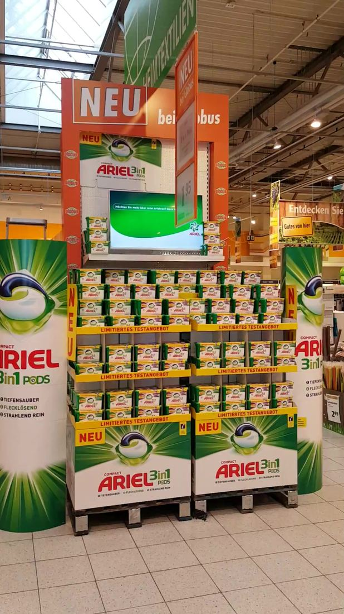
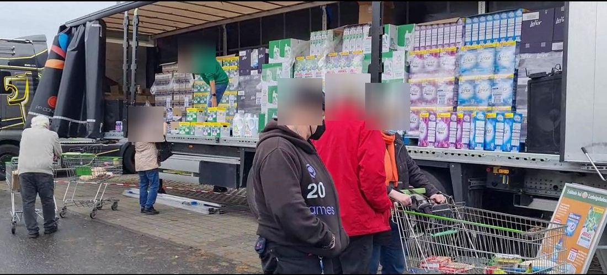
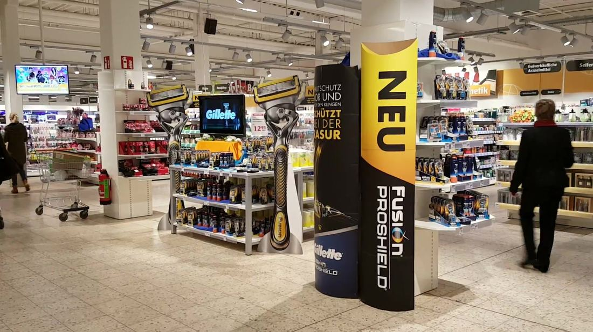
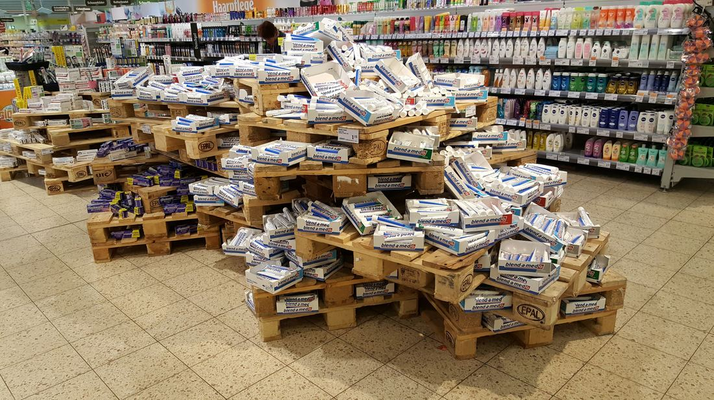
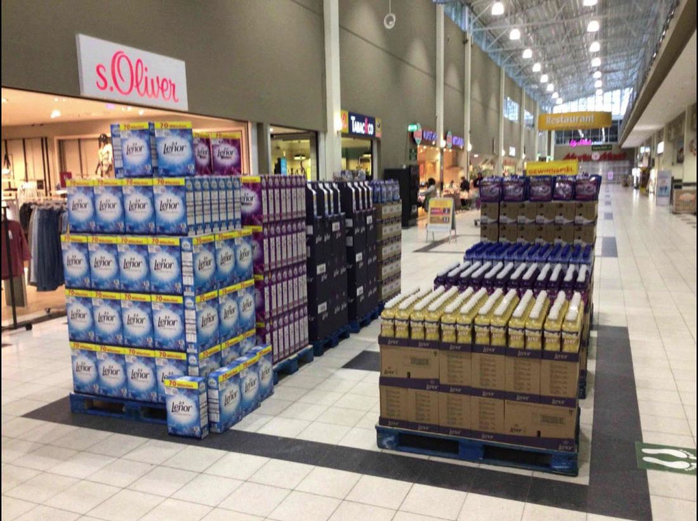
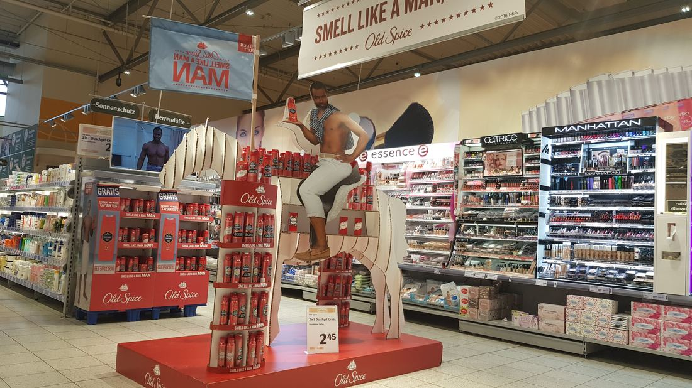
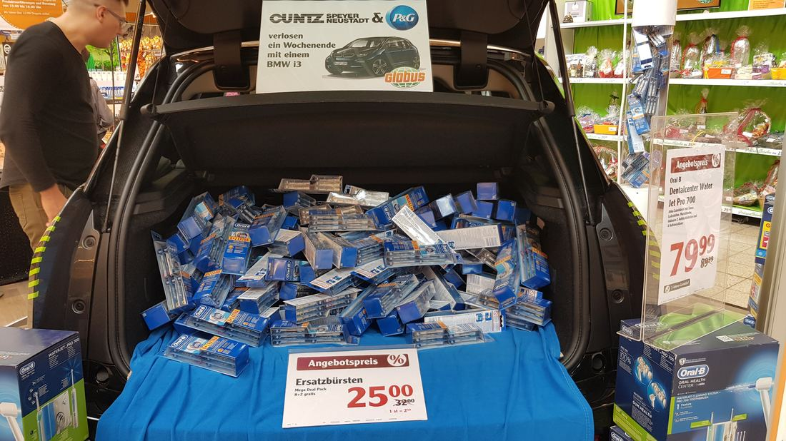

Angefangen habe ich bei Wolf Bergstraße, als dort noch Pom-Bär hergestellt wurde. Danach Intersnack mit Chio Chips, dann 23 Jahre Procter & Gamble – mit Pringles, Wick Bonbons und später Lenor, Ariel und Gillette. Ich weiß, wie Marktführer um jeden Regalmeter kämpfen.
Und ich weiß, wo sie angreifbar sind: bei selbstständigen Kaufleuten. Die entscheiden nicht nur nach Zentrale, sondern danach, was zu ihrem Markt und ihren Kunden passt. Das habe ich in zwölf Jahren Außendienst immer wieder erlebt: dort bewegen eine gute Idee, eine überzeugende Geschichte und eine starke Platzierung oft mehr als der nächste Rabatt.
Bei nucao ist noch nicht alles fertig gebaut. Genau das reizt mich: raus zum Kunden, Händler überzeugen, weiße Flecken schließen und eine Marke im Handel größer machen.
Am meisten Spaß macht mir Vertrieb genau dort, wo der Kunde noch nicht überzeugt ist.
Mein Weg durchs Süßwaren- und Snackregal:
Ich überzeuge Händler von Dingen, die sie nicht angefragt haben – etwa die Umstellung von Gillette-Klingen bei Edeka von der Bedientheke in die Freiwahl.
Bei thomas beteiligungen habe ich ein Kundennetz in einer für mich neuen Branche komplett neu aufgebaut – ohne bekannte Marke im Rücken.
80+ Verbrauchermärkte eigenverantwortlich geführt: Touren, Bestellmengen, Platzierungen und Ziele hatte ich selbst im Griff.
Was am Regal passiert, lässt sich messen.
120 Zweitplatzierungen zum Lenor-Unstoppables-Launch – die meisten aller Gebiete bundesweit. Allein 30 Displays davon in einem einzigen Markt.
Bei Produktneueinführungen in 90 % meiner betreuten Märkte – vorgesehen waren 4 Wochen.
LKW-Aktion Wasch- & Reinigungsmittel: gefordert waren 1–2 Aktionen, geliefert habe ich 5. Selbst an der Obergrenze gemessen: 250 %.
Gillette-Klingen bei der Mehrheit der angesprochenen Edeka-Händler neu platziert – ein Konzept, nach dem niemand gefragt hatte.
Echte Aufbauten aus meiner Zeit im Außendienst – von der Zweitplatzierung bis zur Aktion auf dem Parkplatz. Nächstes Mal gern in Schokolade.







Ich sage lieber ehrlich, wo ich schon Kontakte habe und wo ich bei null anfange. Von Riedstadt aus liegt das Gebiet direkt an der A5 und A67.
Viele Märkte und Wege kenne ich aus meinem früheren P&G-Gebiet, und in der Region werde ich sicher vielen Gesichtern über den Weg laufen, die ich noch kenne.
Gleiche Handelsorganisationen wie in meinem alten Gebiet, allen voran Edeka Südwest. Die Märkte lerne ich neu kennen, die Spielregeln nicht.
Hier fange ich bei null an. Genau dafür bin ich da: weiße Flecken finden, Türen öffnen, Listungen holen.
Nicht erst lange planen – aber auch nicht planlos losfahren.
Perfekt ist niemand. Diese drei Eigenschaften gehören zu mir, und so gehe ich damit um.
Gesprächsinhalte, Details und Situationen bleiben mir oft lange im Gedächtnis. Bei Namen brauche ich dagegen manchmal ein zweites Treffen. Deshalb notiere ich mir wichtige Kontakte systematisch.
Ich spreche Dinge offen an. Händler schätzen das. Intern achte ich darauf, trotzdem das richtige Fingerspitzengefühl zu haben.
Wenn mich ein Produkt überzeugt, erzähle ich gern ausführlich davon. Im Kundengespräch heißt das für mich: erst zuhören, dann erzählen.
Stationen, Zahlen, Zertifizierungen – alles Weitere steht im Lebenslauf.
Lebenslauf ladenLasst uns darüber sprechen, wie wir beides im Südwesten zusammenbringen.